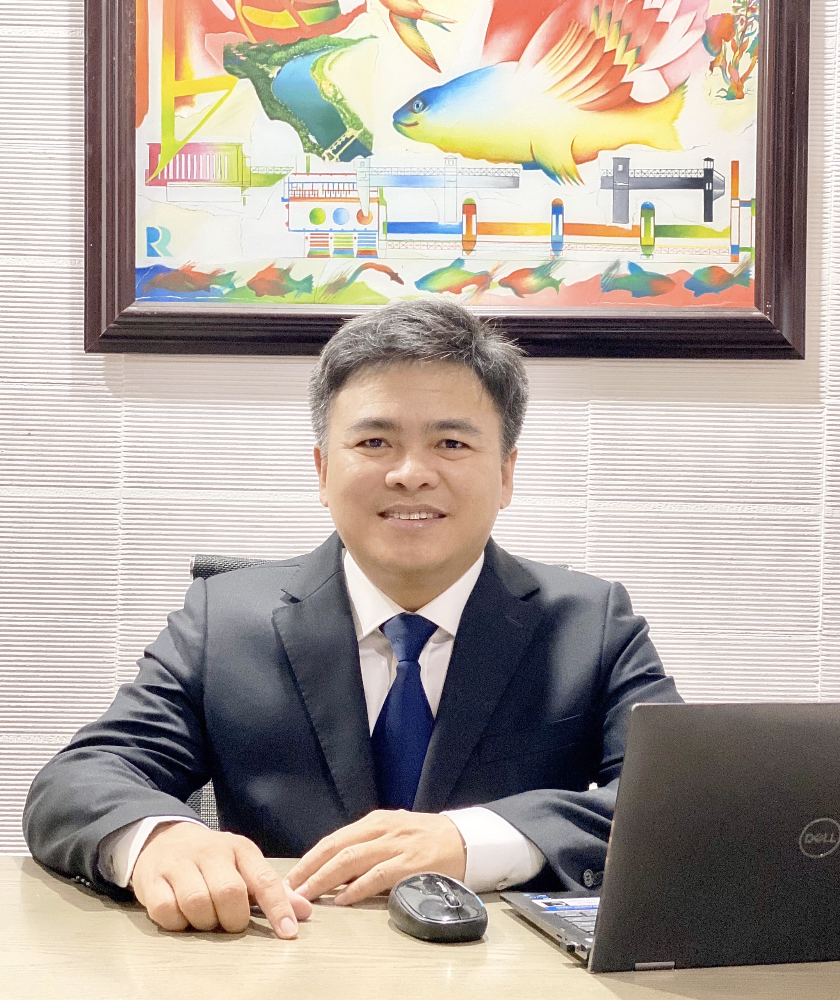

<!DOCTYPE html>
<html lang="en">

<head>
  <meta charset="utf-8">
  <meta content="width=device-width, initial-scale=1.0" name="viewport">

  <title>MyResume Template - Index</title>
  <meta content="" name="description">
  <meta content="" name="keywords">

  <!-- Favicons -->
  <link href="assets/img/favicon.png" rel="icon">
  <link href="assets/img/apple-touch-icon.png" rel="apple-touch-icon">

  <!-- Google Fonts -->
  <link href="https://fonts.googleapis.com/css?family=Open+Sans:300,300i,400,400i,600,600i,700,700i|Raleway:300,300i,400,400i,500,500i,600,600i,700,700i|Poppins:300,300i,400,400i,500,500i,600,600i,700,700i" rel="stylesheet">

  <!-- Vendor CSS Files -->
  <link href="assets/vendor/aos/aos.css" rel="stylesheet">
  <link href="assets/vendor/bootstrap/css/bootstrap.min.css" rel="stylesheet">
  <link href="assets/vendor/bootstrap-icons/bootstrap-icons.css" rel="stylesheet">
  <link href="assets/vendor/boxicons/css/boxicons.min.css" rel="stylesheet">
  <link href="assets/vendor/glightbox/css/glightbox.min.css" rel="stylesheet">
  <link href="assets/vendor/swiper/swiper-bundle.min.css" rel="stylesheet">

  <!-- Template Main CSS File -->
  <link href="assets/css/style.css" rel="stylesheet">

  <!-- =======================================================
  * Template Name: MyResume - v4.2.0
  * Template URL: https://bootstrapmade.com/free-html-bootstrap-template-my-resume/
  * Author: BootstrapMade.com
  * License: https://bootstrapmade.com/license/
  ======================================================== -->
</head>

<body>

  <!-- ======= Mobile nav toggle button ======= -->
  <!-- <button type="button" class="mobile-nav-toggle d-xl-none"><i class="bi bi-list mobile-nav-toggle"></i></button> -->
  <i class="bi bi-list mobile-nav-toggle d-xl-none"></i>
  <!-- ======= Header ======= -->
  <header id="header" class="d-flex flex-column justify-content-center">

    <nav id="navbar" class="navbar nav-menu">
      <ul>
        <li><a href="#hero" class="nav-link scrollto active"><i class="bx bx-home"></i> <span>Home</span></a></li>
        <li><a href="#about" class="nav-link scrollto"><i class="bx bx-user"></i> <span>About</span></a></li>
        <li><a href="#resume" class="nav-link scrollto"><i class="bx bx-file-blank"></i> <span>Resume</span></a></li>
        <li><a href="#Publication" class="nav-link scrollto"><i class="bx bx-book-content"></i> <span>Publication</span></a></li>
        <li><a href="#record" class="nav-link scrollto"><i class="bx bx-server"></i> <span>Project Record</span></a></li>
        <li><a href="#contact" class="nav-link scrollto"><i class="bx bx-envelope"></i> <span>Contact</span></a></li>
      </ul>
    </nav><!-- .nav-menu -->

  </header><!-- End Header -->

  <!-- ======= Hero Section ======= -->
  <section id="hero" class="d-flex flex-column justify-content-center">
    <div class="container" data-aos="zoom-in" data-aos-delay="100">
      <h1>Song Pham</h1>
      <p>Assoc. Prof. <span class="typed" data-typed-items="in Civil Engineering"></span></p>
      <div class="social-links">
          <a href="assets/Resume_Song_EN-full.pdf" class="btn fa-download download-btn">CV</a>
          <a href="https://mit.vn/" class="web_song"><i class="bx bxl-twitter"></i></a>
          <a href="https://www.facebook.com/song.pham.58/" class="facebook"><i class="bx bxl-facebook"></i></a>
          <a href="https://www.researchgate.net/profile/Song-Pham" class="instagram"><i class="bx bxl-wordpress"></i></a>
          <a href="https://github.com/songpham-water" class="github"><i class="bx bxl-github"></i></a>
          <a href="https://www.linkedin.com/in/song-pham-45790249/" class="linkedin"><i class="bx bxl-linkedin"></i></a>
      </div>
    </div>
  </section><!-- End Hero -->

  <main id="main">

    <!-- ======= About Section ======= -->
    <section id="about" class="about">
      <div class="container" data-aos="fade-up">

        <div class="section-title">
          <h2>About me</h2>         
        </div>

        <div class="row">
          <div class="col-lg-4">
            
          </div>
          <div class="col-lg-8 pt-4 pt-lg-0 content">            
            <div class="row">
              <div class="col-lg-6">
                <ul>
                  <li><i class="bi bi-chevron-right"></i> <strong>Birthday:</strong> <span>25 April 1976</span></li>
                  <li><i class="bi bi-chevron-right"></i> <strong>Website:</strong> <span>https://mit.vn/</span></li>
                  <li><i class="bi bi-chevron-right"></i> <strong>Phone:</strong> <span>+84 91912 8686</span></li>                  
                </ul>
              </div>
              <div class="col-lg-6">
                <ul>                  
                  <li><i class="bi bi-chevron-right"></i> <strong>Degree:</strong> <span>Ph.D</span></li>
                  <li><i class="bi bi-chevron-right"></i> <strong>Email:</strong> <span>songphamvan@gmail.com</span></li>
                  <li><i class="bi bi-chevron-right"></i> <strong>City:</strong> <span>Ho Chi Minh city, Viet Nam</span></li>
                </ul>
              </div>
            </div>
            <p>
              My name is Pham Van Song, a Associate Professor in Civil Engineering, President of Mien Dong Innovative and Technology University (MIT University Vietnam). Following items are my research interests:
              <li>Hydraulic Engineering</li>
              <li>Hydrology</li>
              <li>Water Resources Management focussing on AI applications</li>   
            </p>
          </div>
        </div>

      </div>
    </section><!-- End About Section -->

        <!-- ======= Resume Section ======= -->
    <section id="resume" class="resume">
      <div class="container" data-aos="fade-up">

        <div class="section-title">
          <h2>Resume</h2>          
        </div>

        <div class="row">
          <div class="col-lg-6">                       
            <h3 class="resume-title">Education</h3>
            <div class="resume-item">
              <h4>Doctor in Civil Engineering</h4>
              <h5>2004 - 2009</h5>
              <p><em>Berlin University of Technology (TU Berlin), Germany</em></p>
              <ul>
              <li>Thesis: Application of Different Model Concepts for Simulation of Two-Phase Flow Processes in Porous Media with Fault Zones</li>
              <li>Supervisors: Prof. Dr.-Ing. Reinhard Hinkelmann and Prof. Dr.-Ing. Erwin Zehe</li>
              <ul>
            </div>
            <div class="resume-item">              
              <h4>Master of Science in Water Resources Engineering and Management</h4>
              <h5>2002 - 2004</h5>
              <p><em>University of Stuttgart, Germany</em></p>
              <ul>
              <li>Degree grade: Distinction</li>
              <li>Supervisors: Prof. Dr.-Ing. Reinhard Hinkelmann and Dr. Kenichiro Kobayashi</li>
              <ul>
            </div>

            <div class="resume-item">
              <h4>Engineer Degree in Hydraulic Strutures</h4>
              <h5>1994 - 1999</h5>
              <p><em>Water Resources University, Vietnam</em></p>
              <!-- <p> Quia nobis sequi est occaecati aut. Repudiandae et iusto quae reiciendis et quis Eius vel ratione eius unde vitae rerum voluptates asperiores voluptatem Earum molestiae consequatur neque etlon sader mart dila</p> -->
              <ul>
                <li>Top 2 graduated student in 1999. Degree grade: Excellent</li>
                <li>Loa-Thanh National Prize for the Outstanding Project for University Graduation, 1999</li>
                <li>Silver in the Informatics Olympiad, University of Water Resources, 1997</li>
                <li>Gold Medal in the Informatics Olympiad, University of Water Resources, 1998</li>
                <li>Consolidation Prize in the National Informatics Olympiad, 1998</li>
                <li>Consolidation Prize in the National Informatics Olympiad, 1998</li>
                <li>Fist Prize in Scientific Conference of Creative Youth, University of Water Resources, 1999</li>
                <li>MOET Scholarship - Full tuition fee and stipends, awarded to outstanding students to study in Germany 2002-2004</li>
              <ul>
            </div>


          </div>
          <div class="col-lg-6">
            <h3 class="resume-title">Professional Experience</h3>

            <div class="resume-item">
              <h4> President</h4>
              <h5>06/2021 - Present</h5>
              <p><em>Mien Dong Innovative and Technology University (MIT University Vietnam) </em></p>
            </div>

            <div class="resume-item">
              <h4>Vice President</h4>
              <h5>06/2017 - 05/2021</h5>
              <p><em>Vietnamese-German University </em></p>
              <ul>
                <li>Associate Professor, Vice President for Research cum Head of Research Management Department. Team leader of Artificial Intelligence and Water Resources Engineering Group</li>
                
              </ul>
            </div>

            <div class="resume-item">
              <h4>Vice President</h4>
              <h5>10/2015 - 05/2017</h5>
              <p><em>Water Resources University - Southern Campus, Vietnam</em></p>
              <ul>
                <li>Associate Professor, Vice President of Water Resources University - Southern Campus, Vice Director of Institute for Water and
                  Environment Research, Head of Department of Civil Engineering</li>                
              </ul>
            </div>

            <div class="resume-item">
              <h4>Head of Division</h4>
              <h5>09/2013 - 09/2015</h5>
              <p><em>Water Resources University - Southern Campus, Vietnam</em></p>
              <ul>
                <li>Associate Professor, Head of Education and Student Management Division, Water Resources University - Southern Campus, Vietnam</li>                
              </ul>
            </div>

            <div class="resume-item">
              <h4>Deputy Director</h4>
              <h5>06/2009 - 09/2013</h5>
              <p><em> Center for Hydraulic Engineering and Hydromechanics, Southern Institute of Water Resources Research, Vietnam</em></p>              
            </div>
            
            <div class="resume-item">
              <h4>Reseacher</h4>
              <h5>08/2004 - 09/2009</h5>
              <p><em> Berlin University of Technology, Germany</em></p>              
            </div>

            <div class="resume-item">
              <h4>Reseacher</h4>
              <h5>08/1999 - 08/2002</h5>
              <p><em> Southern Institute of Water Resources Research, Vietnam</em></p>              
            </div>
          </div>
        </div>

      </div>
    </section><!-- End Resume Section -->

    <!-- ======= Publication Section ======= -->
    <section id="Publication" class="Publication section-bg">
      <div class="container" data-aos="fade-up">

        <div class="section-title">
          <h2>Selected Publications</h2>
        </div>                
               <ul>
                <li>Pham Ngoc, Pham Van Song, Pham Thi Hoa, Angeli Doliente Cabaltica: (2023) <em>A framework for semi-quantitative 
                  assessment of riverbank erosion risks due to climate change impacts: application for Ho Chi Minh City, 
                  The 26th Conference on Fluid Mechanics, Tuy Hoa, Phu Yen, Vietnam</em></li>

                <li>Pham Van Song, Bui Thi Minh Ha, La Vinh Trung (2023): <em>Vulnerability and flood risk analysis for urban area – 
                  A case study of Ho Chi Minh city, , Urban Transformational Landscapes in the City-Hinterlands of Asia, 
                  Challenges and Approaches, Advances in 21st Century Human Settlements, ISBN 978-981-19-8726-7,
                   https://doi.org/10.1007/978-981-19-8726-7</em></li>

                <li>Song Pham Van, Quang Thanh Dang, Thanh Dang Duc, Duong Tran Anh (2021): <em>Predicting
                  water quality responses under climate change using coupled one- and two-dimensional models for
                  Dong Nai River Basin, Journal of Water Resources Science and Technology, ISSN: 1859-4255, Vol 62/02-2021</em></li>
                <li>Song Pham Van, Hoang Minh Le, Dat Vi Thanh, Thanh Dang Duc, Ho Huu Loc, Duong Tran
                  Anh (2020): <em>Deep learning Convolutional Neural Network in rainfall-runoff modeling, Journal of
                    Hydroinformatics, Vol. 23, https://doi.org/10.2166/hydro.2020.095</em></li>
                <li>Song Pham Van, Xuan Bao Le, Ha Nguyen (2020): <em>Design a Real-time flood early warning system
                  in the Dong Nai - Sai Gon river’s lower basin, Vietnam International Water Week 2020</em></li>
                <li>Pham Van Song, Bui Thi Minh Ha, La Vinh Trung, Jean-Paul Vanderlinden (2019): <em>Vulnerability
                  and flood risk analysis for urban area – A case study of Ho Chi Minh city, 15th InternationalUrbanization Conference: Urban Futures: Critical Transformation in Asian Cities</em></li>

                <li>Tu Le Xuan, Thanh Vo, Johan Reyns, Song Pham Van, Duong Tran Anh, Thanh Duc Dang, Dano Roelvink (2019): <em>Sediment transport and morphodynamical modeling on the estuaries and 
                  coastal zone of the Vietnamese Mekong Delta, Continental Shelf Research, Vol. 186, 64-76</em></li>
                
                <li>Duong Tran Anh, Song Pham Van, Thanh Dang Duc, Long Phi Hoang (2019): <em>Downscaling rainfall using deep learning Long Short-Term Memory and 
                  Feedforward Neural Network, International Journal of Climatology, DOI: 10.1002/joc.6060</em></li>
                  
                <li>Duong Tran Anh, Thanh Dang Duc, Song Pham Van (2019): <em>Improved rainfall 
                  prediction using combined pre-processing methods and feed forward neural networks, 
                  J Multidisplinary Scientific Jounal, J2019, Vol. 2, Issue 1, 65 - 83, DOI: 10.3390/j201000</em></li>             

                <li>Makoto Tamura, Kazuya Yasuhara, Kiyotake Ajima, Van Trinh Cong, Song Van Pham (2018): <em>Vulnerability of climate change and its adaptation in the Mekong Delta: Monitoring and residents’
                  perception survey along the coastal area in Soc Trang province, Vietnam, International Journal of
                  Global Warming, Vol. 16, No. 1, 2018, p. 102 - 117, DOI: 10.1504/IJGW.2018.0943120</em></li>       
                
                <li> Phạm Văn Song, Trinh Cong Van (2016): <em>Water supply techniques for intensive shrimp in Mekong
                  delta, Journal of Water Resources & Environmental Engineering, ISSN 1859-3941, Vol 55/10-2016</em></li>
                
                <li>Pham Van Song (2014): <em>Simulation of flow over piano key weir using numerical and physical
                    model - Case study for Dakmi2 weir, Journal of Water Resources & Environmental Engineering,
                    ISSN 1859-3941, Vol 45/6-2014</em></li>
                
                <li> Nguyễn Thanh Hải, Tăng Đức Thắng, Đinh Sỹ Quát, Phạm Văn Song (2010): <em>Determination of
                  discharge capacity through the piano key weir, Science and Technology Journal of Agriculture and
                  Rural Development, ISSN 0866-7020, Vol.17/2010, pp 41-44</em></li>

                <li> Pham Van, S., Hinkelmann, R., Nehrig, M. & Martinez, I. (2011): <em>A comparison of numerical and
                  experimental simulations of water-gas flow processes through dikes with fault zones, Engineering
                  Applications of Computational Fluid Mechanics Vol. 5, No. 1, pp 149-158</em></li>
                <ul>         

      </div>
    </section><!-- End Publication Section -->

    <!-- ======= Project Record Section ======= -->
    <section id="record" class="record">
      <div class="container" data-aos="fade-up">

        <div class="section-title">
          <h2>Project Record</h2>          
        </div>
        <ul>
          <li><strong>Application of Remote Sensing Technology to Monitor Ocean Waste and Develop the Offshore Collection System for 
            the Coastal Zone of Côn Đảo District, Bà Rịa - Vũng Tàu Province  (2024-2026)</strong></li>
          <em>Client: People's Committee of Ba Ria - Vũng Tàu Province</em>
          <br><em>Assigned tasks: Team leader</em><br>

          <li><strong>Propose the solutions for erosion and deposition mitigation of Mekong river system in Vietnam (2017-2020)</strong></li>
          <em>Client: Ministry of Science and Technology</em>
          <br><em>Assigned tasks: Team leader, flow simulation and writing technical design reports</em><br>

          <li><strong>Development of Operation Rule Curve Research for Dau Tieng Reservoir in Sai Gon River (2013)</strong></li>
          <em>Client: Ministry of Agriculture and Rural Development</em>
          <br><em>Assigned tasks: Team leader, hydrological simulation and writing technical design reports</em><br>
          
          <li><strong>Emergency preparedness plan for the downstream of Dau Tieng reservoir (2012)</strong></li>
          <em>Client: World Bank</em>
          <br><em>Assigned tasks: Project member, hydrodynamic modelling, hydrological simulation</em><br>

          <li><strong>Solution for Winter Wheat Production (2013 - 2015)</strong></li>
          <em>Client: Ministry of Science and Technology</em>
          <br><em>Assigned tasks: Team leader, hydrological simulation and writing technical design reports</em><br>

          <li><strong>Research for Channel Separating Water Supply and Drainage Channels in the Aquaculture System (2009-2010)</strong></li>
          <em>Client: Vietnam Academy of Water Resources - Ministry of Agriculture and Rural Development</em>
          <br><em>Assigned tasks: Team leader of design hydraulic structures, hydrological simulation and writing technical design reports</em><br>

          <li><strong>Sustainable Solution for Flooding Areas in Mekong River Delta in Viet nam (2000-2003) </strong></li>
          <em>Client: Ministry of Science and Technology</em>
          <br><em>Assigned tasks: Project member, hydrodynamic modelling, hydrological simulation and writing hydrological reports</em><br>

          <li><strong>Detailed design and construction drawings of Muong Chuoi storm surge barrier under Ho Chi Minh city area flood protection project (2011-2013)</strong></li>
          <em>Client:  Ministry of Agriculture and Rural Development</em>
          <br><em>Assigned tasks: Team leader of physical modeling package</em><br>
          
          
        <ul>         
      

      </div>
    </section><!-- End Services Section -->

    

    <!-- ======= Contact Section ======= -->
    <section id="contact" class="contact">
      <div class="container" data-aos="fade-up">

        <div class="section-title">
          <h2>Contact</h2>
        </div>

        <div class="row mt-1">

          <div class="col-lg-4">
            <div class="info">
              <div class="address">
                <i class="bi bi-geo-alt"></i>
                <h4>Location:</h4>
                <p>241 Chu van An, Binh Thanh, HCM city, Vietnam</p>
              </div>

              <div class="email">
                <i class="bi bi-envelope"></i>
                <h4>Email:</h4>
                <p>songphamvan@gmail.com</p>
              </div>

              <div class="phone">
                <i class="bi bi-phone"></i>
                <h4>Call:</h4>
                <p>+84. 91912 8686</p>
              </div>

            </div>

          </div>

          <div class="col-lg-8 mt-5 mt-lg-0">

            <form action="forms/contact.php" method="post" role="form" class="php-email-form">
              <div class="row">
                <div class="col-md-6 form-group">
                  <input type="text" name="name" class="form-control" id="name" placeholder="Your Name" required>
                </div>
                <div class="col-md-6 form-group mt-3 mt-md-0">
                  <input type="email" class="form-control" name="email" id="email" placeholder="Your Email" required>
                </div>
              </div>
              <div class="form-group mt-3">
                <input type="text" class="form-control" name="subject" id="subject" placeholder="Subject" required>
              </div>
              <div class="form-group mt-3">
                <textarea class="form-control" name="message" rows="5" placeholder="Message" required></textarea>
              </div>
              <div class="my-3">
                <div class="loading">Loading</div>
                <div class="error-message"></div>
                <div class="sent-message">Your message has been sent. Thank you!</div>
              </div>
              <div class="text-center"><button type="submit">Send Message</button></div>
            </form>

          </div>

        </div>

      </div>
    </section><!-- End Contact Section -->

  </main><!-- End #main -->

  <!-- ======= Footer ======= -->
  <footer id="footer">
    
      <div class="copyright">
        &copy; Copyright <strong><span>MyResume</span></strong>. All Rights Reserved
      </div>
      <div class="credits">
        <!-- All the links in the footer should remain intact. -->
        <!-- You can delete the links only if you purchased the pro version. -->
        <!-- Licensing information: [license-url] -->
        <!-- Purchase the pro version with working PHP/AJAX contact form: https://bootstrapmade.com/free-html-bootstrap-template-my-resume/ -->
        Designed by <a href="Song Pham">Song Pham</a>
      </div>
    </div>
  </footer><!-- End Footer -->

  <div id="preloader"></div>
  <a href="#" class="back-to-top d-flex align-items-center justify-content-center"><i class="bi bi-arrow-up-short"></i></a>

  <!-- Vendor JS Files -->
  <script src="assets/vendor/aos/aos.js"></script>
  <script src="assets/vendor/bootstrap/js/bootstrap.bundle.min.js"></script>
  <script src="assets/vendor/glightbox/js/glightbox.min.js"></script>
  <script src="assets/vendor/isotope-layout/isotope.pkgd.min.js"></script>
  <script src="assets/vendor/php-email-form/validate.js"></script>
  <script src="assets/vendor/purecounter/purecounter.js"></script>
  <script src="assets/vendor/swiper/swiper-bundle.min.js"></script>
  <script src="assets/vendor/typed.js/typed.min.js"></script>
  <script src="assets/vendor/waypoints/noframework.waypoints.js"></script>

  <!-- Template Main JS File -->
  <script src="assets/js/main.js"></script>

</body>

</html>